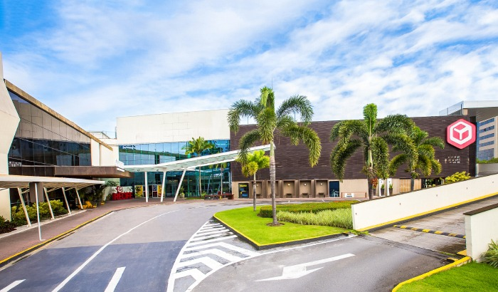
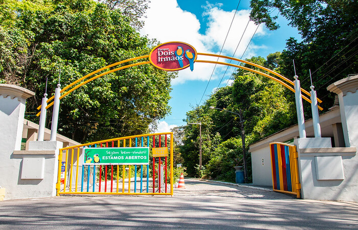

Praia de Boa Viagem
É conhecida por suas águas mornas e calmas, sendo um destino popular para banhistas e turistas. A praia também oferece um belo calçadão e uma vista impressionante com coqueiros e o icônico edifício Parque Dona Lindu. No entanto, é importante estar ciente dos tubarões que ocasionalmente podem ser avistados na área, então é recomendado nadar apenas nas áreas delimitadas por piscinas naturais formadas por recifes.

Shopping Recife
Fundado em 1980, o shopping oferece uma ampla variedade de lojas, incluindo marcas nacionais e internacionais, restaurantes, cinemas, e entretenimento para toda a família. Com sua localização estratégica e ampla gama de serviços, o Shopping Recife é um destino favorito para compras, lazer e gastronomia na região.
Marco Zero
Este local é conhecido como o ponto de referência a partir do qual são medidas as distâncias rodoviárias em Pernambuco. Além disso, o Marco Zero fica às margens do Rio Capibaribe e é cercado por uma área repleta de atrações turísticas, incluindo o Parque das Esculturas Francisco Brennand e o Museu Cais do Sertão. É um lugar de grande importância cultural e histórica na cidade e um ponto de partida popular para explorar o Recife Antigo e sua rica herança cultural.

Zoológico
Ele é um importante centro de conservação e educação ambiental, abrigando uma variedade de animais de diferentes espécies, incluindo mamíferos, aves, répteis e anfíbios. O zoológico oferece uma oportunidade única para os visitantes aprenderem sobre a diversidade da vida selvagem e as questões de conservação.
